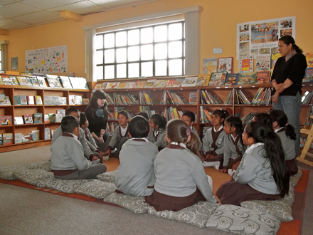

Library Role
Libraries as Counter-Power

Libraries are not separate from the information systems discussed in this project.
While a library cannot create a perfectly neutral information environment. However, it can make the organization of information more visible. It can also give you more than one pathway to knowledge.
Libraries can explain how discovery systems work. You may ask a librarian why catalogue results appear in a particular order, which subject headings are being used, or why one database produces different results from another.
Library instruction should move beyond showing you where to type keywords. It can help you compare recognize biased terminology and identify information that may be missing. You may also learn when to search through a catalogue, academic database, government website, or community organization.
Libraries can improve description. Subject headings and catalogue records may contain outdated language (Yes, DDC and LCC). Libraries can add alternative terms, explanatory notes, or local descriptions that help you find resources through more respectful language.
Libraries can work with communities. Community partnership may help a library understand which materials are missing from its collection. It may also help the library design programs, research guides, and archival projects that reflect local priorities.
You should expect this work to involve communities directly. Libraries should not collect community knowledge only to strengthen their own collections. Communities may need control over how materials are described, preserved, displayed, or restricted.

Libraries can preserve vulnerable information. Local newspapers, newsletters, independent websites, and community records may disappear when organizations close or digital platforms change. With permission, libraries can help preserve these materials and maintain their context.
Preservation should not become surveillance. A library does not need to collect every public post or personal interaction. It should consider whether collecting the information creates enough benefit to justify the possible harm.
Libraries can support multilingual and accessible discovery. You may need information in a community language or an accessible format. Libraries can provide multilingual collections and assistance with digital resources.
Accessibility is not limited to entering a library building. You should also be able to understand the website, use the catalogue, or receive information in a format that meets your needs.
Libraries cares about your privacy!! Searches about health, age, immigration, discrimination,or gender topics may be sensitive. Libraries do not collect your search histories or personal details. They can also teach you how cookies, and personalized ranking influence online discovery.
Not sure what to ask❔ No problem ❗
You do not need to understand every database or search algorithm by yourself. You may ask library staff:
-
Can you help me search this topic using more than one information system?
-
Are there community-created or local sources related to this topic?
-
Which subject terms or historical terms might help me find more material?
-
Is this information available in another language or accessible format?
-
Can you help me evaluate what may be missing from my results?
-
What privacy options are available while I conduct this search?
Avaliable Library Resources
-
Digital Innovation Hubs
Digital-learning programs at Toronto Public Library. -
Library Settlement Partnerships
Free settlement assistance for newcomers through Toronto Public Library branches. -
Book a Librarian at TPL
Personalized help with research, library tools, and community resources. -
Indigenous Storyteller in Residence
A Vancouver Public Library program supporting Indigenous storytelling and intercultural learning. -
Working Together Toolkit
A Canadian resource for developing more inclusive and community-led library services.